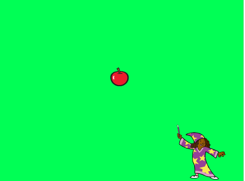
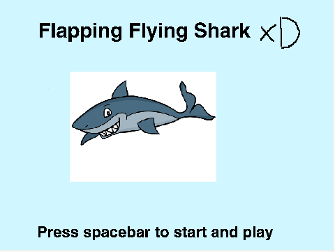
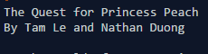

Welcome to my Portfolio Page! xD




This Interactive Fiction sets place in Super Mario World. It's about twin brothers, Mario and Luigi, who both deeply love Princess Peaches. When Peaches is in trouble with Bowser, their loyal will be questioned.
a) I had to know python in order to accomplish this story. b)Some simple problems arise such as misuse of functions but I solved it by asking Ms. Nguyen c)I like how we were able to be a little creative with creating our story. I like Happy Timmy because it was funny and it taught a life lesson. d) If i were to improve this, I would add more details into the setting.